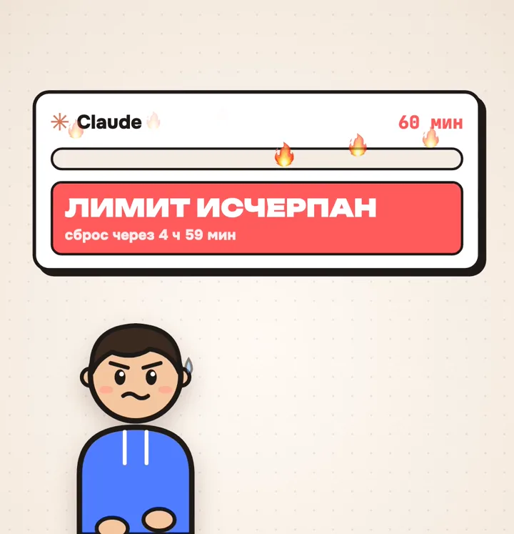
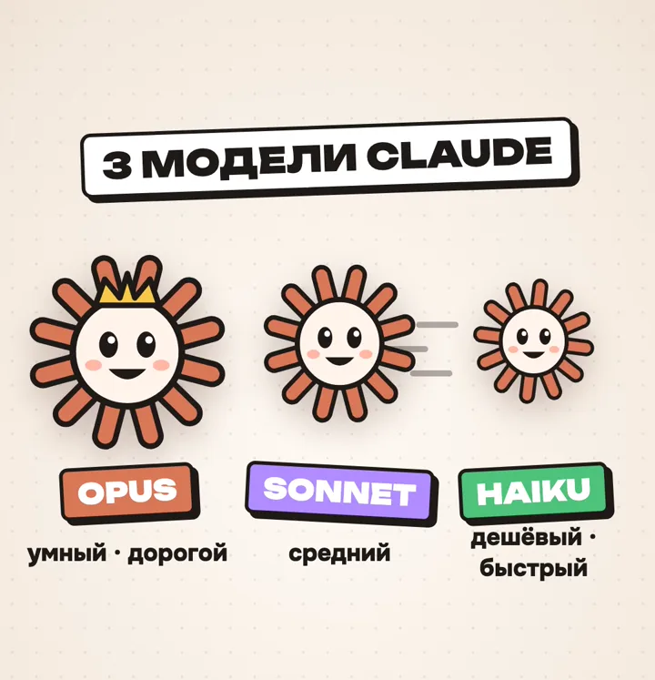
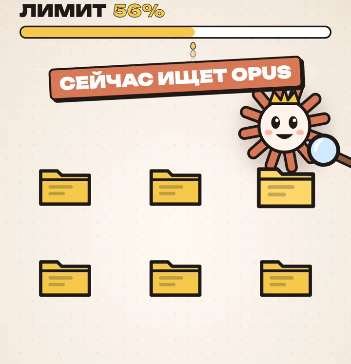
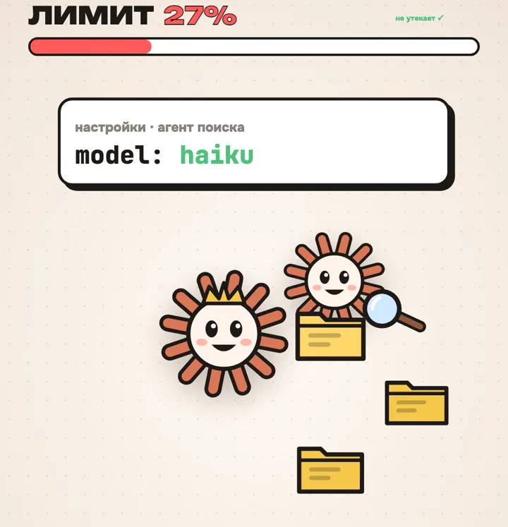
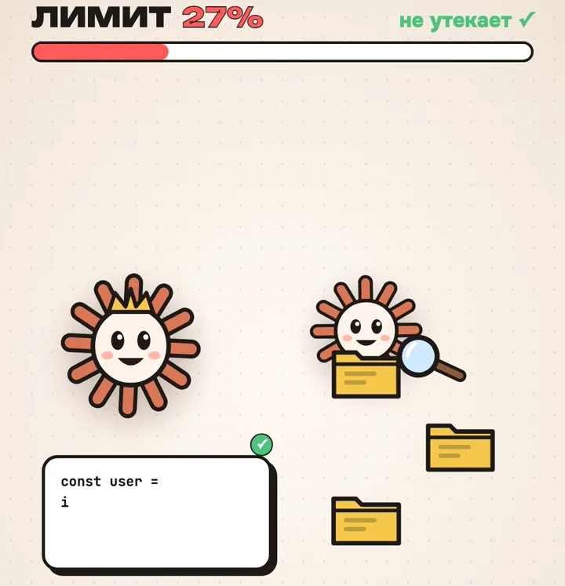

Знакомо: сел поработать, а через час «лимит исчерпан, сброс через 5 часов». Разберёмся, куда он ушёл.
Дело не в том, что ты много пишешь. Чаще всего лимиты съедает поиск по файлам, который Claude Code запускает сам. Ниже — где это происходит и одна настройка, которая это чинит.

Знакомо: сел поработать, а через час «лимит исчерпан, сброс через 5 часов». Разберёмся, куда он ушёл.
Claude Code — версия Claude, которая работает с файлами и программами на твоём компьютере. Нужна подписка Claude Pro или выше. В обычном чате Claude этой настройки нет.
Доступ из России. Claude официально не работает в России. Если он у тебя не открывается, подключи BrodSky: сервис, через который Claude открывается и работает из России. 👉 @Brodsky_vpn_bot

Opus — самый умный и самый дорогой. Sonnet — крепкий середнячок. Haiku — быстрый и дешёвый.
Чем умнее модель, тем быстрее она тратит лимит. Поэтому важно, чтобы каждая работа доставалась нужной модели.
Так советуют в рилсах. Это вредный совет: код — как раз та работа, где умная модель окупается. Отдашь код дешёвой модели — сэкономишь копейки, а ошибки будешь искать часами.

Когда Claude Code ищет нужные файлы, он запускает помощника-поисковика. Многие думают, что поиск всегда делает дешёвый Haiku. Но по документации Claude Code встроенный поисковик работает на той же модели, что и основной чат. Сидишь в Opus — и бегать по папкам тоже будет Opus.
Поиск — работа частая и объёмная: прочитать десятки файлов, чтобы найти пару нужных строк. На дорогой модели это и сжигает лимит.

Нужно создать своего помощника-поисковика с именем Explore и моделью haiku. Claude Code увидит его и будет использовать вместо встроенного. Проще всего попросить об этом самого Claude:
Создай файл ~/.claude/agents/Explore.md — своего агента Explore, который заменит встроенный поиск. В шапке укажи name: Explore, model: haiku, инструменты только для чтения (Read, Grep, Glob, Bash) и запрет на Write и Edit. Задача агента — искать файлы и коротко отвечать, что нашёл, с путями. Потом скажи, нужно ли перезапустить Claude Code.
Если папки ~/.claude/agents раньше не было, перезапусти Claude Code, чтобы он увидел нового агента. Проверить можно командой /agents: там должен быть Explore с моделью haiku.

Теперь по папкам бегает быстрый и дешёвый Haiku, а Opus тратит лимит только на то, что умеет лучше всех — код и сложные решения.
Если поиск начнёт промахиваться, поменяй в файле model: haiku на model: sonnet. Чтобы вернуть всё как было, просто удали файл Explore.md.
Перешли эту страницу тому, кто жалуется на лимиты Claude.
Канал @BrodskyINFO